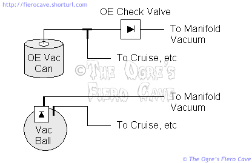

Go Home
Site Map
Go Home
Site Map
Vacuum leak detection.
In this article I'll cover the general things that apply to all Fiero versions, then later I'll break out the version specific and detail items.
Contrary to popular belief, vacuum plumbing problems are a major issue. Even small vacuum leaks can cause major headaches.
A major problem? Why?
The ECM will try to compensate for leaks up to a certain size. The leak will often cause performance problems without setting DTCs in the ECM. Depending on exactly where the leak is, it can unbalance the entire engine.
Let's say you've got an Iron Duke and the EGR is leaking slightly around the base. This allows air to enter the intake right near the middle cylinders, leaning them out just a little. The ECM tries to make up for this by increasing the fuel feed. The end result is that the end cylinders are probably running rich. The car may seem to run pretty normally but you'll take a hit in fuel economy and most likely you'll have strange drivability problems that are often hard to duplicate.
Any vacuum leak is letting air in after the IAC and Throttle Plate. The ECM tries to make up for this by closing the IAC and likely increasing the fuel flow. This can cause a number of odd things to happen, like goofy Idle and hesitation.
Ultimately, there is no such thing as an acceptable vacuum leak. All leaks must be found and fixed.
Tools:
Spray can of "throttle body" and Fuel Injection cleaner. (This is safe for all EFI. Carburetor cleaners can sometimes do damage to EFI parts. Don't use it.) ((I do NOT recommend most people use the propane search method. It is far to easy to start a fire with this method, especially if done with improvised equipment.))
Assorted line plugs and port caps.
Hand operated vacuum pump such as "Mighty Vac" or equivalent. If you are buying one of these, just get the whole vacuum brake bleeding kit. Then you'll get more use from it and bleed the brakes or clutch allot faster.
General:
Eliminate the nonessential items first. Start the car after each of the following and see if it has solved your problem.
Disconnect the 2 lines to the Fuel Vapor Recovery canister. Plug the ports on the throttle body and/or manifold.
Disconnect the Cruise Control line and plug its manifold port.
Disconnect the EGR line from the throttle body and cap its port. (I'll get more into the EGR later)
In the front compartment disconnect and plug the line on the brake booster. DO NOT attempt to drive the car with the booster disabled! The brake booster can leak internally. Carefully inspect the booster vacuum line and all it's clamps. All joints in this line should be clamped and the rubber hose sections free of cracks or other damage. Make sure there are no rusted sections of steel line. (The section inside the cabin is likely OK.) If any section of the line looks questionable spray the suspect area with EFI cleaner.
Check the line to the MAP sensor carefully. Hard line doesn't like being bent, especially when cold. (DO NOT spray the MAP sensor with solvent when searching for a vacuum leak!)
If the above have not solved the problem then carefully begin searching with the spray cleaner. Start the car and spray the throttle body mountings and work your way around whatever isn't disconnected. DO NOT spray the distributor, coil(s), sensors or IAC with cleaners or solvents! You will likely damage them or start a fire. Use as little spray as possible to find the leak. Don't soak things. Test an area, let it dry then test another. The RPMs should change one way or the other when you spray the leak.
Fuel Vapor Recovery Canister:
This device catches vapor from the fuel tank. It uses 2 vacuum lines. The large (purge) line is connected to manifold vacuum. This line is used to ventilate the canister. The smaller (control) line is connected to the main bore of the throttle body and only opens the purge valve beyond a certain amount of throttle.
Problems with the canister can include failure of the purge valve to close and cracks in the purge valve body or canister itself.
There is also a fiber filter in the bottom of the canister that should be replaced periodically.
Another problem that this device can develop is flooding. Flooding is caused when liquid fuel is forced up the vent line into the canister. A flooded canister can cause rich mix problems with the engine. A canister that has been flooded should be replaced. To prevent flooding avoid "topping off" the fuel tank when you fill up. If the nozzle of a retail fuel pump is defective, and they often are, then you can pressurize the fuel tank and force fuel up the vent line into the vapor canister. It doesn't take allot of liquid fuel to screw up the canister. Even if the pump doesn't force fuel into the canister, fuel expansion in the tank can and often will. Either way, topping off the tank is a bad idea.
Quick test....
Disconnect both lines and connect a hand vacuum pump to the large line. Give the pump a squeeze and make sure the line holds vacuum. 10 inches is plenty of vacuum for this test.
Now use the pump on the small line. Draw only 3-4 inches maximum on this line! More than a few inches vacuum can damage it. While you have vacuum on the control line, blow into the purge line. Air should move freely. While blowing into the purge line release the vacuum on the control line. The valve should close and block all airflow in the purge line.
Cruise Control:
Leaks in the cruise control servo diaphragm cannot be fixed. Some people have had luck cleaning the valves on the servo and/or the dump valve. (The dump valve is a backup valve that kills the cruise when the brake is pressed and is mounted separately from cruise servo.)
There is also a vacuum reserve canister in the cruise system. Older style canisters are often metal and are prone to rusting out. Replace these with new style plastic canisters.
There are 2 styles of canister. The ones with 2 fittings usually have integral check valves. The ones with single ports are used with a check valve in the manifold line.
You can replace the can and inline check valve with a 2 port vacuum ball, but you must also insure that the plumbing is redone to work correctly. I think the larger port on these is usually the manifold side but test it to make sure.
The exact size of the canister is not very critical. Any canister of approximately the same volume or greater will work. You can get good used plastic canisters for about nothing at any salvage yard. The plastic ones will last nearly forever. Just make sure the check valve is working before you leave the yard. (Blowing into one port is very easy. The other is not going to let you if the valve works.) BTW: You can get these from many American made cars. It doesn't have to be a GM product.

As you can see, changing to the vacuum ball also simplifies the vacuum lines quite a bit. If you make this change, and cruise stops working, then you may have put the lines on the Vac Ball wrong.
Brake booster:
The brake booster unit should not be disassembled. If you believe it leaks then it will need to be replaced. You generally can't get parts for the booster and there is a very heavy spring inside it that likes to send thing flying.
The check valve that the vacuum line connects to can go bad. This usually manifests as brakes that work right only at idle. The check valve shell can crack and cause a vacuum leak. You can replace the valve by itself. Try MotorMite's HELP! or VacuTite lines.
Don't forget to check the brake filter on cars that have them. The plastic shell of them is pretty tough but it can crack or melt. The brake filter does need to be replaced on occasion. If it plugs up you will have brake problems.
Hard lines:
Hard vacuum line can be a pain to service. You can get the line but finding the correct fittings can be difficult at best. (The rubber fittings are reusable if they are in good condition and sealing tightly to both the line and the port.) If you replace hard line with soft line make sure the new lines are not pinched or collapsed from bending too tightly. The soft line should be sized to properly slide onto the fittings and stay tight. Don't stretch undersized line to fit. It will likely split in short order.
New Hard Line can be shaped or straightened by careful use of heat. (Try dipping the line in very hot water.) Be careful not to pinch or stretch the softened line. Don't try to form old lines. They usually break even when warmed.
Note: If you replace the MAP sensor line with soft line then keep the line as short as possible. The soft line will have a larger internal volume per inch of line than the hard line. This increased volume can affect the reaction time of the MAP sensor. A slow MAP sensor will likely hurt performance. Even when using hard line it is best to keep the MAP feed short as possible.
Make sure the steel PCV valve line is not rusted through anyplace and that both elbows are sealed. GM recommends clamps on the elbows. Be careful with the clamps that you don't cut into the soft elbows.
4 Cylinder specific:
The 4 cylinder EGR is bolted directly to the intake manifold. Make sure it's tight. The bolts have a nasty habit of coming loose. Replace the gasket if the bolts have come loose at all. (The FelPro EGR gasket costs about $1.00 at most parts stores.)
The EGR valve is hard to test for leakage. Make sure the valve isn't binding. One way to test EGR problems is to make a block off plate and seal the manifold openings. Then run without it for a little bit. Note: Permanently running the car without the EGR is a crime in the United States. Running the car without the EGR can cause detonation, which can damage the engine. This is a testing procedure only.
87-88 TBI:
Be careful not to spray the MAT sensor's plastic parts with solvent. Depending on the solvent used, you can damage the sensor. The MAT sensor is located to the right of the TBI unit and is screwed into the intake manifold. Avoid intake backfires in these engines. If the car backfires into the intake, the MAT sensor should be inspected for damage. If the MAT sensor has been cooked it should be replaced. (The MAT sensor is used in calculating fuel/air ratio.) Don't over tighten the MAT sensor or you may split the intake manifold.
Check the base of the TBI for leaking, especially if there is any evidence the air cleaner has hit the trunk wall. (Read the torque strut article.) There is a specific sequence to tighten the 700 TBI to the manifold. Read the TBI 700 article. The emissions vacuum line map for these years is in the TBI 700 article. That map doesn't include cruise.
V6 specific:
You'll need to check the EGR plumbing very carefully. Use extreme caution if you decide to use spray or gas searching on this. The V6 EGR plumbing gets hot enough to light off many solvents on contact.
The V6 EGR control valve must also work properly. If it's acting up, try electronics parts cleaner. Don't use the cleaners with lubricant in them. The lubricants will hold dirt and quickly clog the valve up again. (Most "Tuner wash" and contact cleaners have lubricants in them.)
To test this valve, with the engine off, blow into the line connected to the EGR valve. The air should exit the vent hole. Cap the vent hole and blow again into the EGR port. No air should come out the manifold port.
To test during run, connect a vacuum gauge to a T in the EGR valve line. You should be able to see the vacuum rise and fall when the ECM has activated the EGR valve. Using an ECM scanner with the vacuum gauge may be helpful. I think the ECM will tell you when it's trying to open/shut the EGR. You should see a corresponding change on the gauge. (I think the ECM may also report the EGR vacuum sensor status. I can never remember just what ECM reports what.)
You must also carefully inspect the entire plenum. If bolts have come loose you may be able to simply tighten them but likely you will need to replace the gaskets.
Rodney Dickman now offers formed metal vacuum lines for the V6.